The 'D Solutions'
The D Solutions is what we call our unique workflow approach to any Business Intelligence project. This unique workflow devised by our highly experienced consultants, enables one single person with technical and project management skills to accomplish & manage the end to end data workflow.
Leveraging the D Solutions, we create automated reporting systems that deliver accurate actionable insights to decision makers in real-time. Thus, enabling business managers and key decision makers in any business organisation make data driven decision at the snap of a finger.
LET US SHOW YOU HOW THE ‘D SOLUTIONS’ WORKS
It all begins with choosing the right person for the job – Our Highly Trained Consultant.

Our consultant than understands the business requirements and the insights that needs to be retrieved from the raw data source. This piece of information is usually delivered to us by a line manager who clearly understands the business requirements.
Next, we go down the waterfall and speak to database administrators to understand the data sources and data architecture. We then do a comprehensive analysis of the data structure to harmonize raw data with the business requirements we gathered earlier in the process.
Leveraging our unique knowledge of data systems and our technical skills, we then extract the data into the desired format using Alteryx, a global leader in data blending and advanced analytics.

Next up, we use our data visualisation and analytical skills to create beautiful dashboards and reports that can show the required insights at the click of a button. The secret behind the beautiful reports and dashboards – We use tableau!.
Phewww… This looks like too much work for one person. We now hand the baton to the line manager, delivering all the requested insights for present and future use, in sync with the business requirements, available in real time with the click of a button.
WHY THE ‘D SOLUTIONS’ IS DIFFERENT
The D Solutions is not just restricted to our choice of software, its uniqueness can rather be attributed to the work flow that we have created with our Project Management skills acquired during our years of journey in the business intelligence and data analytics industry. It works flawlessly with every industry vertical, delivering trailblazing insights that help businesses not only in achieving their goals but opens more avenues for revenue generation. Built from ground up by business experts with an IT engineering background, the D Solutions delivers business value at every step of developing and deploying reporting solutions using Self Service Data Analytics tools.
WHY THE D SOLUTIONS IS BETTER
D SOLUTIONSSERVICES OFFERED

DATA MANIPULATION & DATA VALIDATION
DATA VISUALISATION & INSIGHTS EXTRACTION
PROJECT MANAGEMENT
DIRECT YOUR INTERNAL RESOURCES